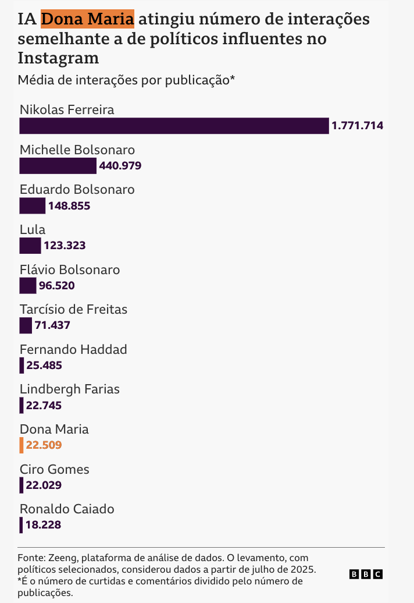
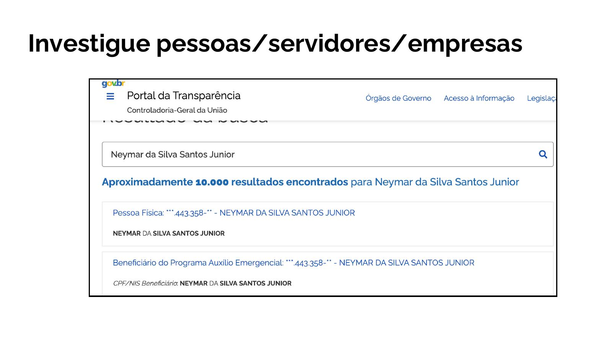
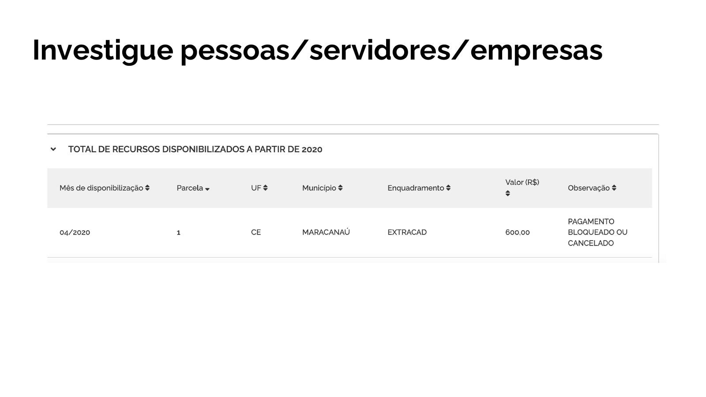
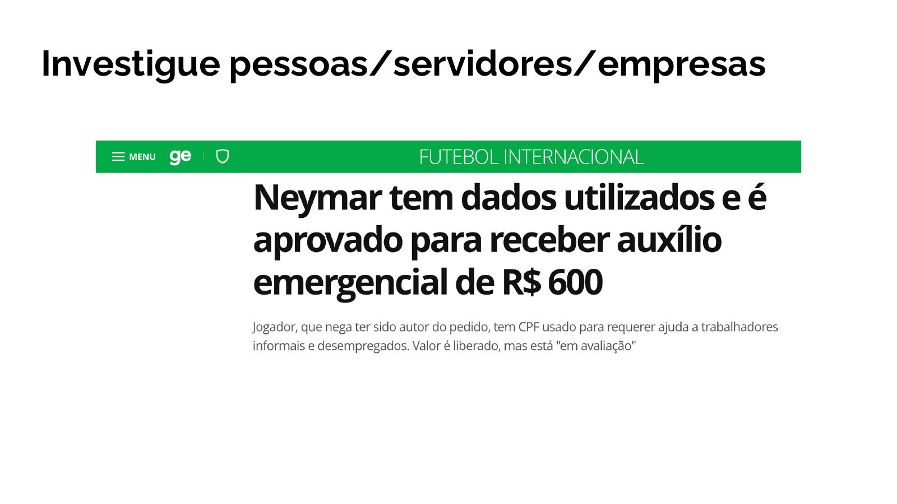
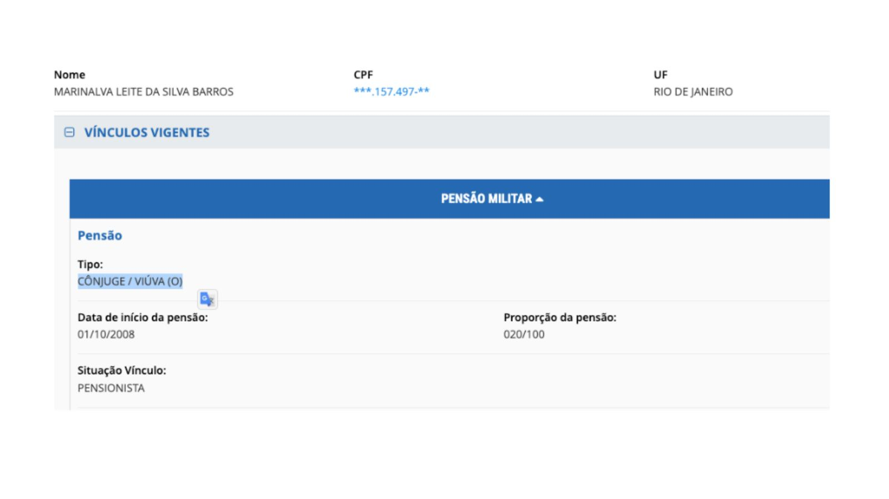
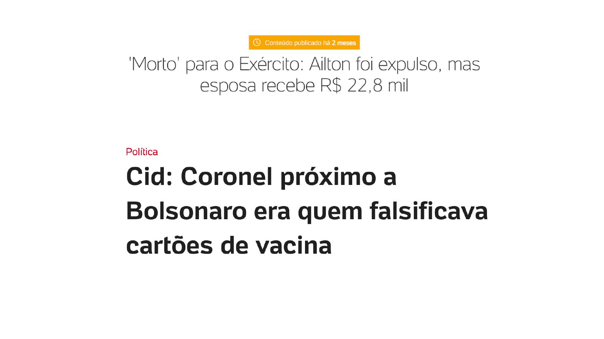
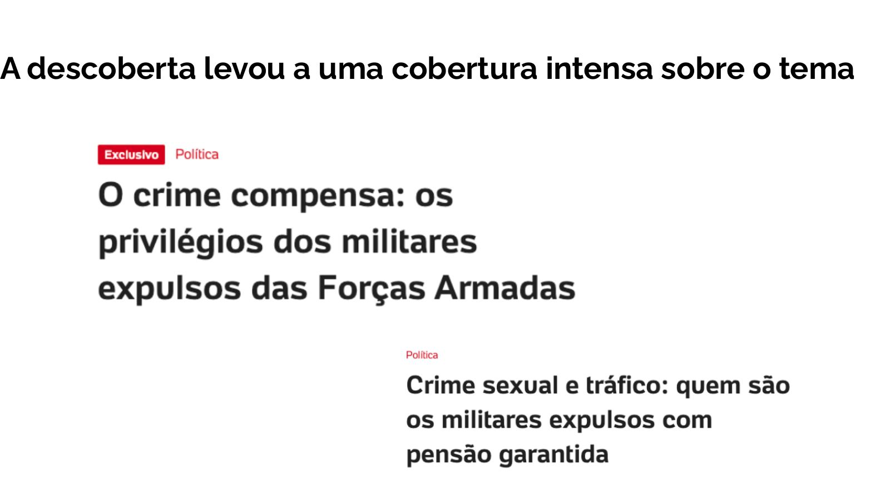
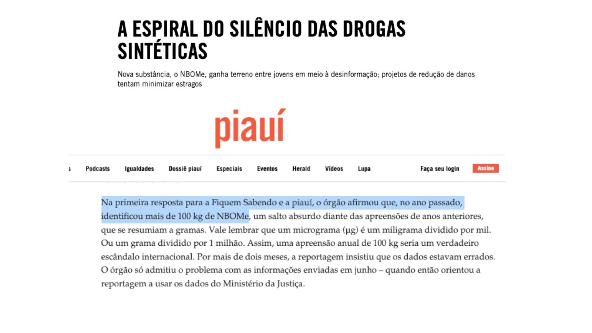
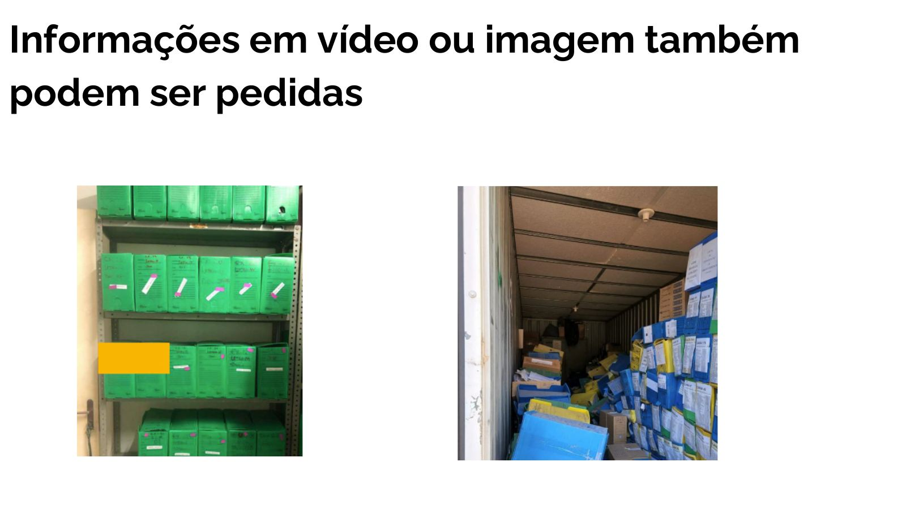
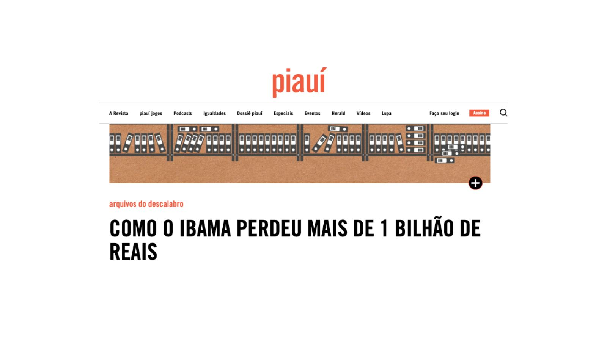

Por que usar dados no jornalismo
O jornalismo de dados não é um gênero separado nem uma especialidade técnica reservada a poucos. É, antes, uma postura de apuração em que o repórter começa ou complementa a apuração por meio de dados e documentos (mas esses conceitos começam a se misturar no momento, com a evolução da IA).

A pauta começa com um tema abrangente — uso de IA nas eleições — e um levantamento de dados de engajamento no Instagram. Então decide focar em um perfil de IA e compará-lo com outros perfis. Mas o mais importante não são os números, que dão a dimensão: eles estão ali para dar ainda mais destaque e ênfase para a história da página e de seu autor — e dos riscos para a eleição. Os dados não estão lá sobrando, eles são um pilar da reportagem. Sem eles, a matéria poderia cair no sensacionalismo ou na história pessoal sem dimensão do impacto que causa ou pode causar nas eleições.
A personagem de IA que viraliza com críticas ao governo Lula e ao STF
Dez razões para trabalhar com dados
- Descobrir histórias inéditas que ninguém está contando.
- Destrinchar falas oficiais e identificar exageros ou informações falsas.
- Mais independência em relação às assessorias e aspas oficiais.
- Qualificar o debate sobre políticas públicas.
- Abrir caminho para conversar com fontes — quando você chega com uma descoberta concreta em mãos, a entrevista muda de patamar.
- Avançar em um tema de maneira independente ou em parceria com profissionais de fora do jornalismo (pesquisadores, cientistas sociais, MP/Judiciário) a partir de descobertas próprias.
- Abrir caminho para novos serviços e produtos jornalísticos.
- Encontrar várias histórias diferentes nos mesmos dados.
- Ampliar o engajamento do leitor e a credibilidade da reportagem.
- Ganhar credibilidade junto às fontes e à audiência.
Não é porque você usou dados que a matéria virou relatório. Simplifique sempre e mantenha o foco na história. Poucos números, muito contexto.
O que considerar antes de usar dados
Os dados são um meio, não um fim. Antes de abrir a planilha, pergunte-se se eles de fato trazem uma informação relevante para o leitor.
As perguntas que você precisa responder primeiro
- Os dados trazem uma informação realmente relevante?
- Por que os leitores vão se interessar? No que isso muda a história?
- Como você vai comparar os números com algo compreensível — séries históricas, outras cidades, outras políticas públicas?
- Como você vai ilustrar esses dados para a história não virar um relatório?
Regras de ouro
- Use poucos números e mais contexto. Dois números bem escolhidos contam mais do que uma tabela inteira.
- Simplifique conclusões sempre que possível. Se você precisa de muitos parágrafos para explicar o gráfico, o gráfico está errado.
- Dê exemplos. Escolha as partes mais relevantes, não tente encaixar tudo.
- Cuidado com "o Estado campeão" ou "a cidade com a maior quantidade". Na maioria das vezes, isso só significa que aquele lugar tem mais gente.
Entrevistar fontes e entrevistar dados
Entrevistar alguém e analisar dados são tarefas mais parecidas do que imaginamos.
Entrevistar uma fonte
- Conseguir acesso à fonte
- Conhecer a fonte
- Pesquisar o histórico dela
- Tirar a fonte da zona de conforto
- Demonstrar contradições
- Identificar erros na fala
- Traduzir jargões para o público
- Buscar informações inéditas
- Cruzar com outras fontes
Entrevistar dados
- Ter acesso aos dados
- Conhecer colunas, células e metadados
- Pesquisar quem e como produziu
- Análises com recortes novos
- Encontrar contradições e erros
- Corrigir/adaptar o que for necessário
- Transformar conforme o projeto
- Buscar informações inéditas
- Cruzar com outros dados
Perguntas respondidas (parcialmente) por dados
- Em que ano houve mais homicídios nesta cidade? E por quê?
- Quais fatores explicam o melhor ou pior desempenho no Enem?
- Quais áreas econômicas concentram o maior número de MEIs e como isso mudou ao longo do tempo?
- Como é a distribuição de raça entre as pessoas que estão presas?
- Quanto o governo gastou com leite condensado? É pouco ou muito? (e isso tem interesse público? se sim, por quê?)
- Qual bairro tem menos policiais proporcionalmente à população?
Portal da Transparência
É um excelente ponto de partida para inúmeras reportagens.
Endereço oficial: portaldatransparencia.gov.br.
O que investigar no portal
- Pessoas físicas: servidores, beneficiários, sancionados.
- Empresas: contratos, sanções, convênios.
- Cartões corporativos: quem, onde e em quê gastou dinheiro público.
- Licitações, contratos e emendas parlamentares.
- Orçamento por órgão — útil para comparar prioridades.
Busque por "Neymar da Silva Santos Junior" no portal. Você vai encontrar algo inesperado para um jogador que está entre os mais bem pagos do mundo.



Busque por "Ailton Gonçalves Moraes Barros", ex-major do Exército indiciado pela PF como um dos principais nomes do esquema de fraude nos cartões de vacinação de Jair Bolsonaro.



Descobrindo laranjas
O Portal da Transparência é uma das formas mais diretas de identificar laranjas — pessoas que aparecem como donas de empresas, mas que, na prática, não são. A lógica é simples: se alguém figura como sócio de uma empresa conhecida ou de capital social elevado, mas ao mesmo tempo consta no portal como beneficiário de Bolsa Família, auxílio emergencial ou outro benefício voltado a pessoas de baixa renda, há uma enorme chance de que essa pessoa não seja a verdadeira dona do negócio.
A partir desse descasamento entre patrimônio declarado e perfil socioeconômico, você encontra o fio da meada para investigar quem está de fato por trás de uma empresa — e por que alguém a registrou em nome de outro.
Ferramentas complementares
Além do Portal da Transparência, existe um ecossistema robusto de bases organizadas por parceiros — normalmente gratuitas ou com acesso facilitado para jornalistas.
Base dos Dados
Dados brasileiros integrados e limpos. Consulta via web, SQL ou pacote em Python/R.
Cruzagrafos
Plataforma que cruza bases públicas para encontrar conexões societárias. Ideal para investigar laranjas. Disponibiliza também informações sobre multas ambientais e candidaturas.
Aleph
Maior repositório colaborativo de documentos investigativos do mundo. Acesso sob solicitação a jornalistas verificados.
Escavador & JusBrasil
Informações jurídicas, societárias e publicações oficiais. Jornalistas filiados à Abraji têm acesso diferenciado.
Busca LAI
O "Google" dos pedidos de informação já respondidos. Ótimo para descobrir quem já perguntou o que você quer saber.
Lei de Acesso à Informação
A LAI (Lei 12.527/2011) é um dos instrumentos mais poderosos do jornalismo brasileiro. Use quando os dados não estão nos portais, mas também saiba quando NÃO usar.
Por que usar a LAI
- Acesso a dados que o poder público não tem interesse em divulgar.
- Informações que fogem ao formato tradicional: fotos, vídeos de fiscalizações, arquivos antigos, pareceres internos.
Quando NÃO usar a LAI
- Se a informação já está em portais de transparência, releases ou sites oficiais, busque ali primeiro.
- Se uma instituição de pesquisa ou ONG já trabalha com esses dados (ex: Fórum Brasileiro de Segurança Pública para criminalidade), comece por ela.
- Se você está com pressa. A LAI pode demorar semanas ou meses.
Para quem perguntar
- Executivo, Legislativo e Judiciário.
- Sociedades de economia mista e demais entidades controladas direta ou indiretamente pelo governo.
- Entidades privadas sem fins lucrativos que recebam recursos públicos.
Prazos
- Resposta inicial: 20 dias, prorrogáveis por mais 10.
- Recursos: 5 dias por etapa.
- Última etapa: pode levar meses ou mais de um ano, dependendo do órgão.
- Descumprimento: raro na administração federal, ainda comum em prefeituras, legislativos municipais e no Judiciário.
Onde pedir
- FalaBR — todos os órgãos públicos federais vinculados ao Executivo.
- E-SIC estaduais e municipais — busque por "Esic" + nome da cidade ou estado.
- Sites próprios — universidades estaduais (USP, Unesp, Unicamp) e outras entidades autônomas têm canais próprios.
A lei é clara: qualquer cidadão pode solicitar qualquer informação pública sem dar razões. Na prática, porém, estudos mostram que solicitantes institucionais recebem respostas mais completas que cidadãos comuns.
A LAI como coletiva de imprensa permanente
Encare a LAI como uma entrevista. Autoridades têm mais dificuldade para fugir das perguntas incômodas quando existe uma trilha documental.
Órgãos públicos não são "donos" das informações
- Faça quantos pedidos julgar necessário.
- Dê apenas as informações necessárias para chegar aos dados.
- Sua instituição ou empresa que usará as informações não precisa estar descrita no pedido.
- Sigilo só pode ser aceito se justificado de forma específica e excepcional.
- Se não existe regra específica, a informação é pública.
Como escrever um bom pedido
Um bom pedido é específico, delimitado e ancorado em contexto. Explique o que sabe — e exatamente o que falta saber.
Os quatro elementos essenciais
- Local. "Dados de todos os municípios do estado, cidade por cidade."
- Período. "Dados para os últimos cinco anos, mês a mês."
- Detalhes que interessam. "Dados devem ser divididos por gênero, raça e separados por distrito."
- Contexto que você já sabe. Explique ao órgão onde está a informação, quem a produziu. Pesquise antes e fale com quem é da área.
Solicite formato aberto
Formato aberto é aquele que permite edições, para que você possa trabalhar livremente nos dados. É comum que órgãos públicos respondam aos seus pedidos com arquivos em PDF ou tabelas estáticas. Elas não servem. O ideal é que as respostas com dados sejam fornecidas em formato de planilha, como CSV ou XLSX. E tem legislação para te ajudar. Texto pronto para copiar no pedido:
Requisitamos que as respostas sejam fornecidas em formato aberto (planilha em *.xls, *.csv, *.ods, etc.), nos termos do art. 8º, §3º, III da Lei Federal 12.527/11 e art. 24, V da Lei Federal 12.965/14. Esclarecemos que arquivos em formato *.pdf não são abertos (item 6.2 da Cartilha Técnica para Publicação de Dados Abertos no Brasil).
Quem é o responsável pela informação?
Pedidos bem-sucedidos são direcionados. No caso do Programa Pé de Meia, por exemplo, há múltiplos responsáveis: MEC, FNDE, Caixa Econômica Federal e secretarias de educação municipais e estaduais.
Na dúvida: pesquise antes e peça redirecionamento do pedido ao órgão competente. É melhor ser redirecionado do que receber uma negativa por endereçamento errado.
Dado público não é sinônimo de dado correto. Cheque outras fontes. Consulte o que já foi publicado e fale com especialistas. Certifique-se de que os servidores entenderam o pedido e de que você entendeu o contexto em que a informação foi coletada.

Em reportagem da piauí abordada na aula, mostramos que a polícia confundiu gramas de apreensão de uma substância com quilos em uma resposta enviada via LAI. O que poderia ser um escândalo era, na verdade, apenas um erro de digitação. A lição: antes de publicar, confirme os dados com as fontes, entenda o contexto e desconfie de números que parecem bons demais para ser verdade.
Informações em vídeo, imagem ou áudio também podem ser pedidas
Câmeras de fiscalização, fotos de vistorias, arquivos em áudio, documentos digitalizados — tudo entra no escopo da LAI. A LAI não se limita a planilhas: ela cobre qualquer registro produzido ou arquivado pelo poder público.

Um caso real ilustra bem essa possibilidade. A partir de pedidos via LAI, o IBAMA liberou fotografias de contêineres apreendidos e arquivos físicos contendo cópias em papel de multas e embargos ambientais. Segundo fontes ouvidas pela reportagem, esses documentos estavam com traças ou sofrendo com efeito de chuvas — alguns até desaparecendo — o que acelerou o processo de prescrição de mais de um bilhão de reais em multas ambientais. Sem a LAI, esse material provavelmente jamais chegaria ao público.

A lição: quando você precisa de algo que não está digitalizado, peça assim mesmo. O órgão é obrigado a fornecer em formato acessível, o que muitas vezes significa que eles próprios vão escanear os documentos para você.
Veja este curso completo: Investigue gastos públicos com a Lei de Acesso à Informação — na Udemy, com exercícios práticos, modelos de pedidos e estudos de caso reais.
E se o pedido for negado? Recursos
Um "não" da primeira instância é apenas o começo. A LAI prevê cinco etapas de recurso, cada uma com seus prazos e instâncias.
Os três P's do sigilo
Antes de entrar com recurso, saiba que existem apenas três razões legítimas para negativa:
- Pessoal. Informações que expõem a privacidade de cidadãos.
- Previsto em outras leis. Sigilos específicos de outras normas (fiscal, bancário).
- Proteção do Estado. Segurança nacional ou do chefe de Estado.
Fora desses três casos, a regra é publicidade. Pesquise como um advogado: a Busca Precedentes da CGU mostra como órgãos reagiram em situações parecidas.
As etapas do recurso
- SIC — Serviço de Informação ao Cidadão Servidor do órgão requerido.
- Chefe hierárquico Autoridade imediatamente superior no órgão requerido.
- Autoridade máxima do órgão Ministro, presidente da autarquia ou cargo equivalente.
- CGU — Controladoria-Geral da União Ou ouvidoria local, quando for o caso.
- CMRI — Comissão Mista de Reavaliação de Informações Ou órgão colegiado equivalente na administração requerida.
Para entrar com recurso: 10 dias. Para resposta: 5 dias. Da CGU em diante, pode levar semanas ou meses — mas vale a persistência.
Material extra: reportagens, vídeos e cursos
Achar personagens com dados
Aluno pobre tem só 0,16% de chance de estar entre os melhores do Enem
Análise de 1,3 milhão de candidatos. Fatores socioeconômicos pesam até 85% no resultado; entre alunos ricos, a chance de estar no topo chega a 25%.
Identificar irregularidades cometidas por autoridades
Os 2,8 mil candidatos multados por danos ao meio ambiente
Políticos que disputam cargos municipais mesmo com multas ambientais em seus nomes.
Agrupar interesses e conflitos
Empresários do mercado imobiliário são metade dos 50 maiores doadores
Investigação sobre o financiamento das campanhas municipais de 2024.
Encontrar lugares que ilustram um problema
'Turismo de Instagram' aumenta violações ambientais em Fernando de Noronha
Pousada de celebridades e turismo de massa pressionam o arquipélago protegido.
Nomear responsáveis de forma direta e buscar padrões
Como produto de mão de obra escrava vai parar na sua calçada
Cruzamento entre a lista suja do trabalho escravo e contratos públicos.
Como emenda apoiada por Hugo Motta foi parar em obra com produto de trabalho escravo
Do release sobre emendas parlamentares a uma investigação com nome de responsáveis.
Buscar padrões em texto que revelem histórias de interesse público
Candidatos que usam propostas idênticas em planos de governo
"Nada se cria, tudo se copia", diz o autor de plano copiado por outros candidatos.
Navegar por milhões de arquivos — a série Epstein no Brasil
Um caso em que o acesso aos dados já estava dado para todo mundo. Mas a forma como eles foram utilizados é que fez a diferença entre reportagem ou um tweet curioso.
Epstein financiou modelos brasileiras e avisou dias antes sobre sua prisão
Os indícios de como o bilionário pretendia recrutar mulheres no Brasil
O elo com o Brasil revelado em novos documentos: 'Grande grupo brasileiro'
'Umas 50 brasileiras' estiveram na mansão do bilionário, diz vítima
MPF abre investigação sobre rede de aliciamento de mulheres após reportagem da BBC
Epstein tinha CPF e tentou ponte com empresários brasileiros para negócios
Caso Epstein: mãe impediu modelo brasileira de viajar aos EUA com recrutador
Epstein used modelling agent to recruit girls, Brazilian women tell BBC
Versão internacional da investigação, com entrevistas inéditas de vítimas brasileiras.
Planilhas do zero
Como trabalhar com planilhas para jornalismo
Vídeo-guia recomendado como ponto de partida para quem nunca abriu uma planilha com olhar jornalístico.
Ferramentas de IA para apuração
A IA generativa é um ótimo acelerador para resumir documentos, gerar roteiros de áudio e até explorar grandes PDFs. Mas nenhuma delas substitui a checagem humana.
NotebookLM
Análise de documentos, resumos, geração de podcasts a partir de fontes carregadas pelo próprio jornalista.
Claude
Um dos LLMs mais fortes para leitura crítica de documentos longos, redação e apuração assistida.
ChatGPT
Útil para limpar dados, gerar código em Python/R e tirar dúvidas de metodologia.
Gemini
Bom para análise multimodal, integração com produtos Google e consultas com contexto longo.
Curso online — com passo a passo
Investigue gastos públicos com a Lei de Acesso à Informação — curso na Udemy com todas as técnicas apresentadas aqui, aplicadas em exercícios reais.
Referências e links
Tudo reunido em um só lugar, para você voltar aqui sempre que precisar.
Leis
- Lei 12.527/2011 · Lei de Acesso à Informação
- Decreto 7.724/2012 · regulamentação da LAI
- Lei 12.965/2014 · Marco Civil da Internet
- Lei 14.129/2021 · Lei do Governo Digital
- Cartilha Técnica para Publicação de Dados Abertos no Brasil
Portais oficiais
- Portal da Transparência do governo federal
- FalaBR · sistema nacional de pedidos de LAI
- Busca LAI · pedidos já respondidos
- Busca Precedentes · decisões da CGU
- Guia da LAI · CGU (PDF)
- Portal Brasileiro de Dados Abertos
- Tribunal de Contas da União · TCU
- Painéis de Transparência do TCU
- TSE · Repositório de Dados Eleitorais
- Receita Federal · dados abertos
- IBGE
- Atlas da Violência · IPEA
- Anuário Brasileiro de Segurança Pública · FBSP
- Câmara dos Deputados · dados abertos
- Senado Federal · transparência
Ferramentas de apuração
- Base dos Dados — bases brasileiras integradas e limpas
- Cruzagrafos · Abraji — cruzamentos societários
- Aleph · OCCRP — maior repositório global de documentos investigativos
- Escavador — informações jurídicas e societárias
- JusBrasil — jurisprudência e processos
- Querido Diário · Open Knowledge Brasil — diários oficiais municipais
- CEPESP · FGV — dados eleitorais e políticos
- OpenRefine — limpeza e transformação de dados
- Datawrapper — visualização rápida para redações
- Flourish — storytelling com dados
- Tabula — extração de tabelas de PDFs
- Google Sheets — planilhas colaborativas gratuitas
IA generativa para jornalismo
- Claude · Anthropic — análise de documentos longos
- ChatGPT · OpenAI — limpeza de dados, código, explicações
- Gemini · Google — análise multimodal
- NotebookLM · Google — resumos e podcasts a partir de fontes
- Perplexity — busca assistida por IA com citações
Organizações e comunidades
- Abraji · Associação Brasileira de Jornalismo Investigativo
- Transparência Brasil
- Open Knowledge Brasil
- ARTIGO 19 Brasil
- Fiquem Sabendo — agência especializada em LAI
- GIJN · Global Investigative Journalism Network
- ICFJ · International Center for Journalists
- OCCRP
Leituras recomendadas
- The Art of Access · David Cuillier & Charles N. Davis. Um dos melhores manuais sobre o uso da LAI americana — com lições válidas para o Brasil.
- The Data Journalism Handbook · datajournalism.com/read/handbook/two
- Manual de Jornalismo de Dados · Abraji
- Precision Journalism · Philip Meyer — o clássico que deu origem ao campo.
- Story-Based Inquiry · Mark Lee Hunter (UNESCO) · download gratuito
Cursos online — aprofundamento
- Investigue gastos públicos com a Lei de Acesso à Informação · Udemy — expande tudo o que vimos aqui, com exercícios práticos e casos reais do Portal da Transparência.
- IA para jornalistas · Abraji — kit de ferramentas Gemini aplicado ao jornalismo, com materiais gratuitos.